split and set for your reading pleasure, this time.
on the surface, that's pretty much it.
i hope and assume you've been taking notes all this time. the mandatory exam is coming up at the end of all my words, after all. i've heard it's a tricky one. one huge monospaced essay on everything i've taught you up to this point. and, of course, how you will use your newfound knowledge to alter the world.
the real important things
cultivating, curating, and taking a moment
i hope and assume, dear reader, that you were able to pick up on my sarcasm.
no need to fret over an essay, it's not requried. though, honest-to-goodness, i encourage it. the purpose of printed matters, this project, this great-big-essay, is to get you, reader, excited about words in all their forms. words on websites, and words on paper, and words about websites and paper, and words about words. i sincerely hope that my presentation of content is not only typographically educational, but even somewhat exciting and engaging.
as you may have amassed, i care a lot about these things. words, yes, but it's bigger than them alone. it's about the things those things can create, and things that people have already created from the things. not to mention all of the things to come! there's a whole word-world of things to appreciate and be inspired by. and a piece of me hopes that for someone, somewhere, this thing can be that thing. if you know what i mean.
though this thing would not be in the state that it is in had it not been for the things that came before it. (and the creators of those things!)
so, my reader, my beloved, this is my garden of things. i encourage you to pick and prod and sniff and smell. appreciate everything that has made this thing what it is. and, sincerely, every person who's made this person who she is.
forgive me, it's about to get a bit nerdy in here.
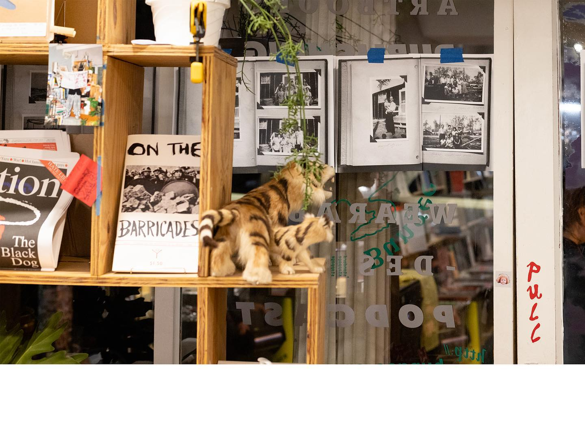
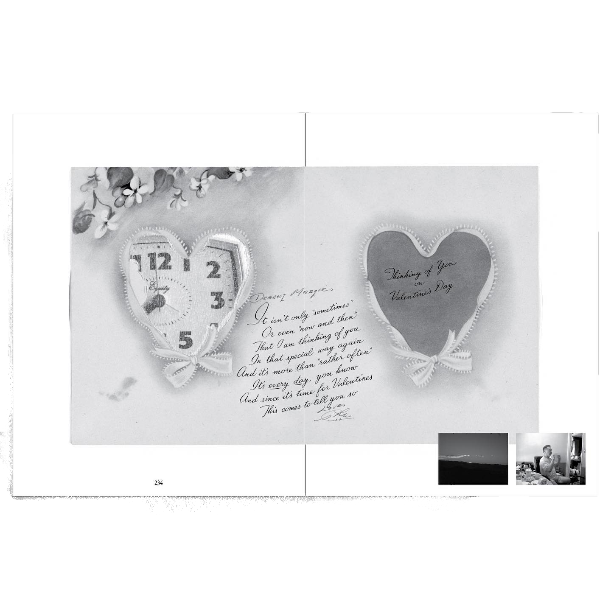
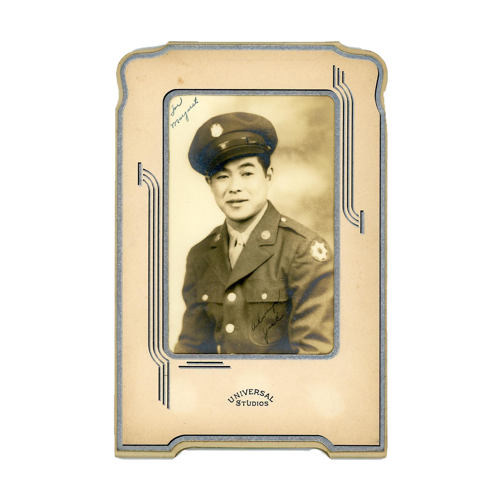
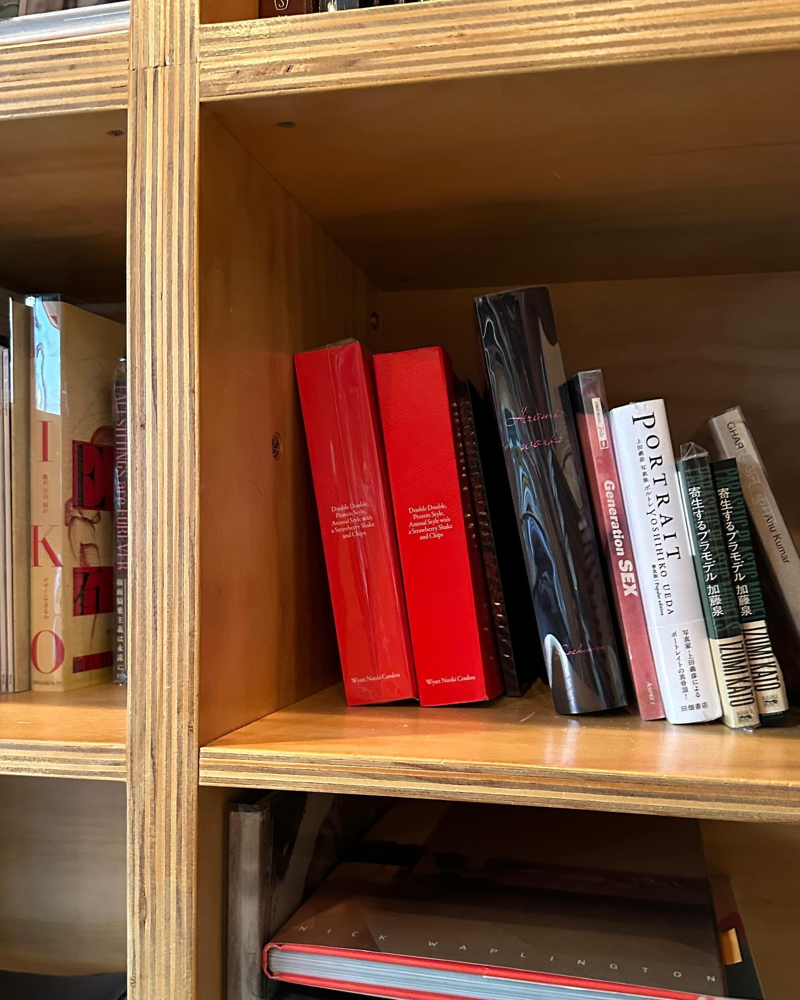
wyatt conlon
wyatt is an interdisciplinary visual artist based in los angeles, california. he aims to embody and explore his ancestral heritage through found/made imagery, with an emphasis on archival photographs (both personal and acquired.)
he is the spearhead of a greater project called 'their archives,' a communal piece specifically designed to engage with loss, memory, and beauty, in all senses of the words. 'their archives' resonates deeply with me as a collector of objects and impressions, as well as falling distinctly within my aesthtic sensibilites. i am incredibly inspired by wyatt's quest for understanding of interpersonal-society, and the place he occupies within it. in searching for meaning within his own life in such a tender and intimate way, he has inspired me to do the same; to make concious effort to contemplate my relationships with others, and myself, and, as a result, my work.
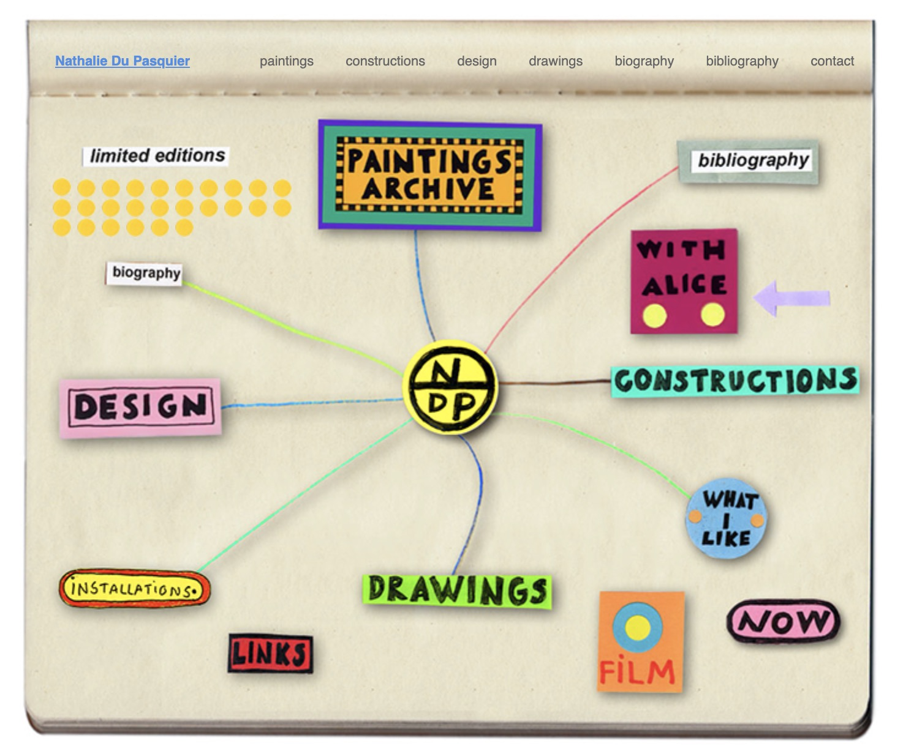
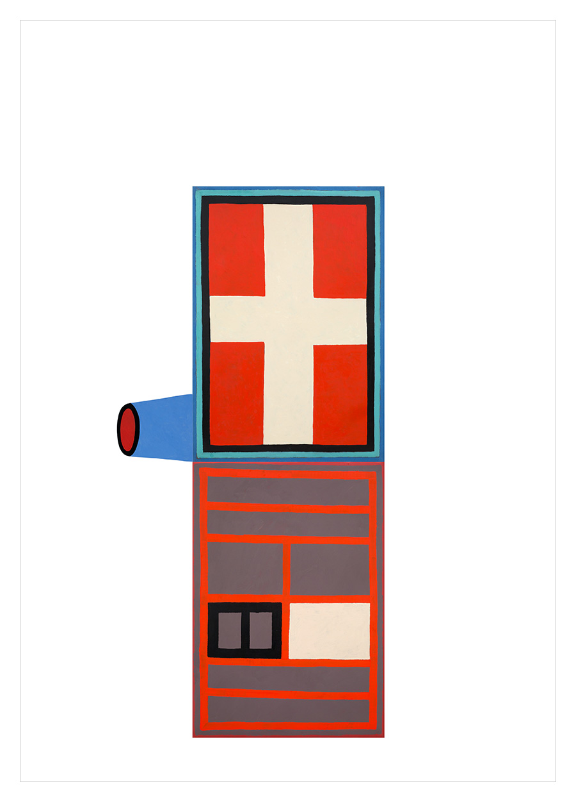
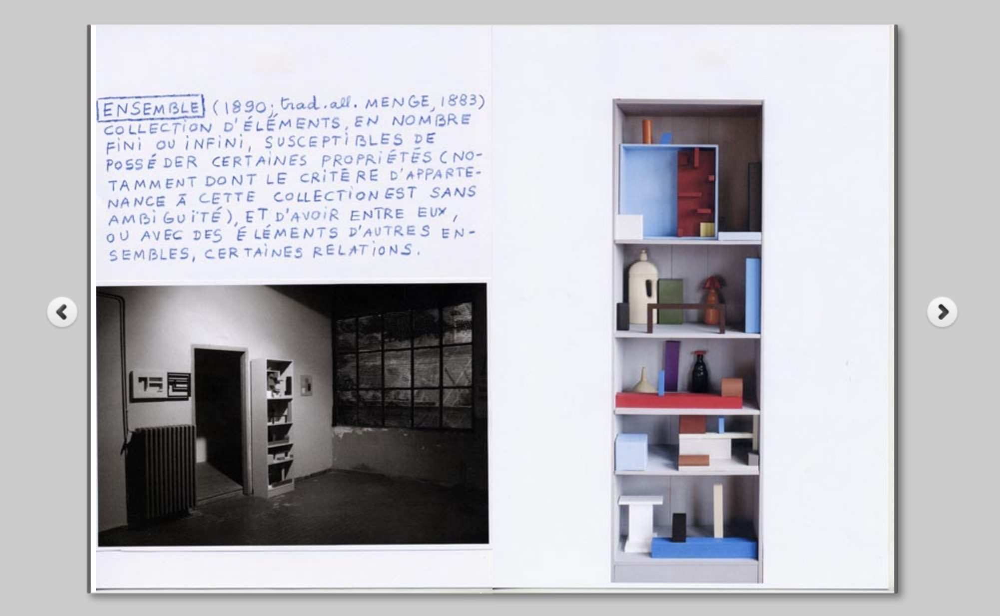
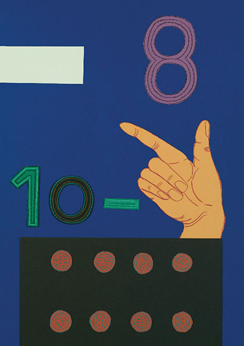
nathalie du pasquier
nathalie is french artist, now self-proclaimed 'surface decorator' and 'object-maker.' she is among the founding members of the memphis movment, and her works walk the fine line between eccentricity and 'professionalism,' the latter in quotes, as many of her works concern corporate disallusionment and an active reinvention of modern values. as a creative, she resists digital/high defintion graphics in favor of a more ecletic/handmade approach, infusing everything she touches with a token bit of NDP whimsy.
her handle on shape and color is tremendous, and i often look to her for inspiration when starting new projects.
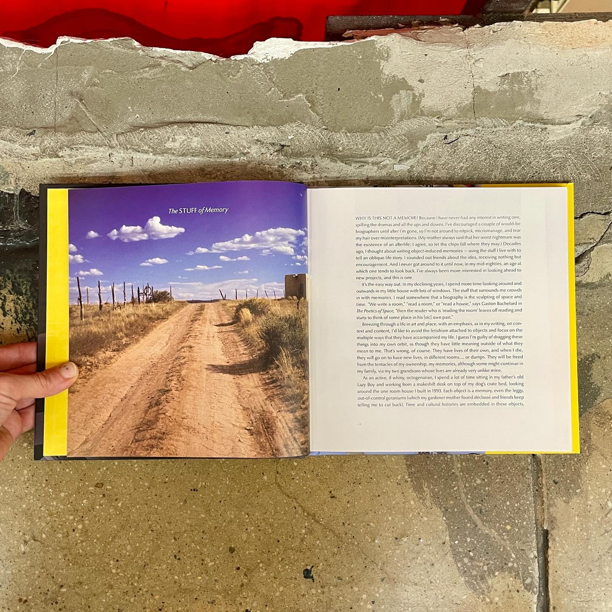

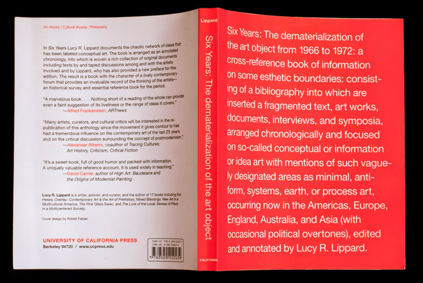
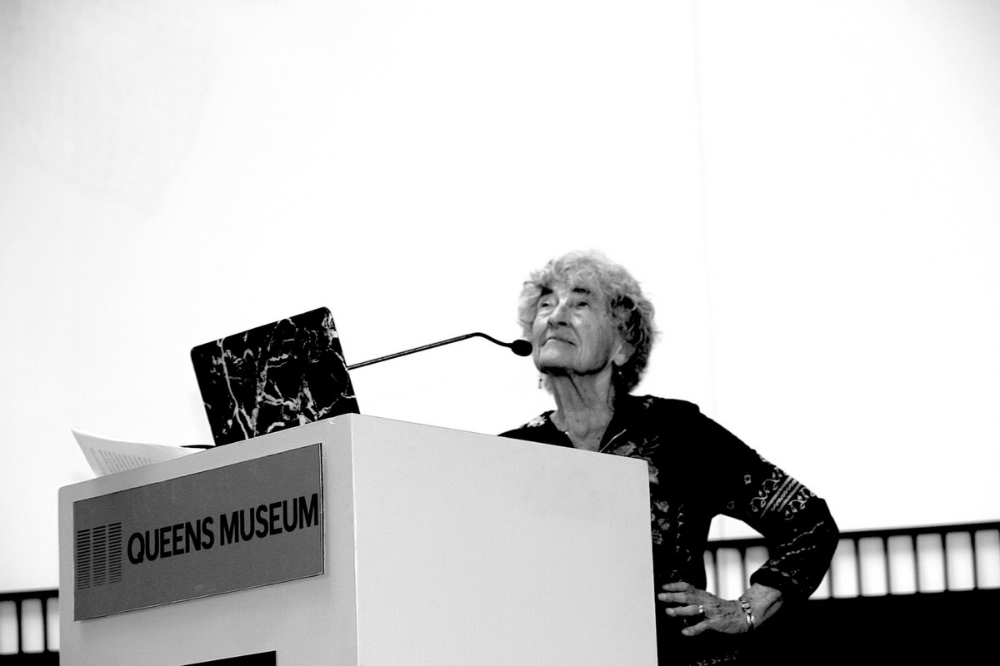
lucy r. lippard
lucy is a wearer of many hats, as tends to be the case with those engaged with print media. she began as a curator: piecing together visual art exhbitions that featured population catalogs on 10 x 15 cm index cards. she was a pioneer of feminist-avant-garde works: spanning such themes across her written and visual works alike. key titles (that require little explanation) include 'get the message?: a decade of art for social change,' 'six years: the dematerialization of the art object,' and heresies: a feminist journal on art and politics. she is also a founder of new york's 'printed matter,' a renowned center for book arts, and this project's partial namesake.
with the years, she became a writer, and a professor, and radicalized. now 84, she lives in new mexico and continues her quests for documentation.
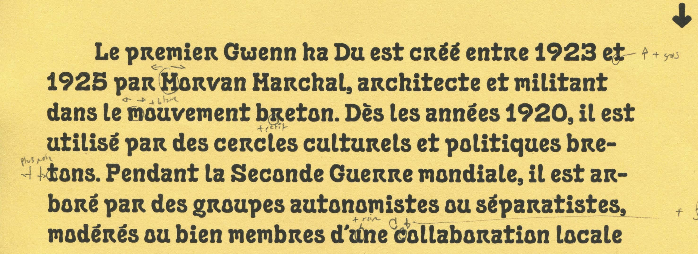
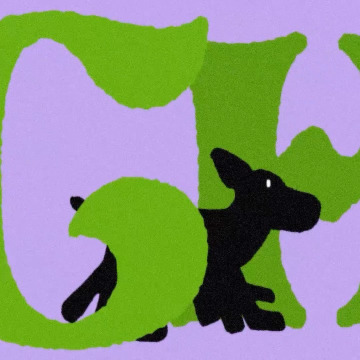
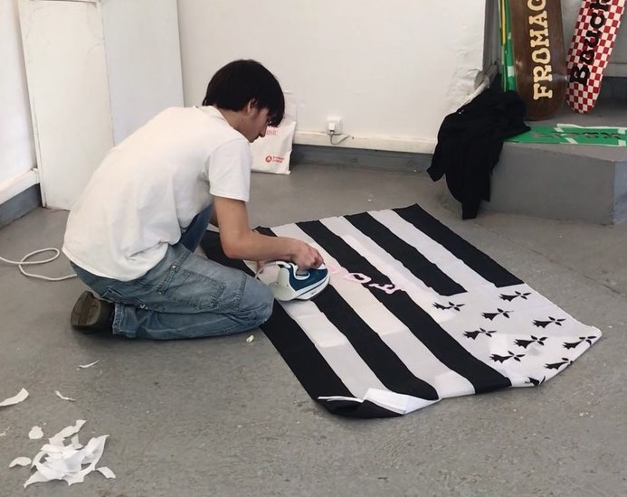
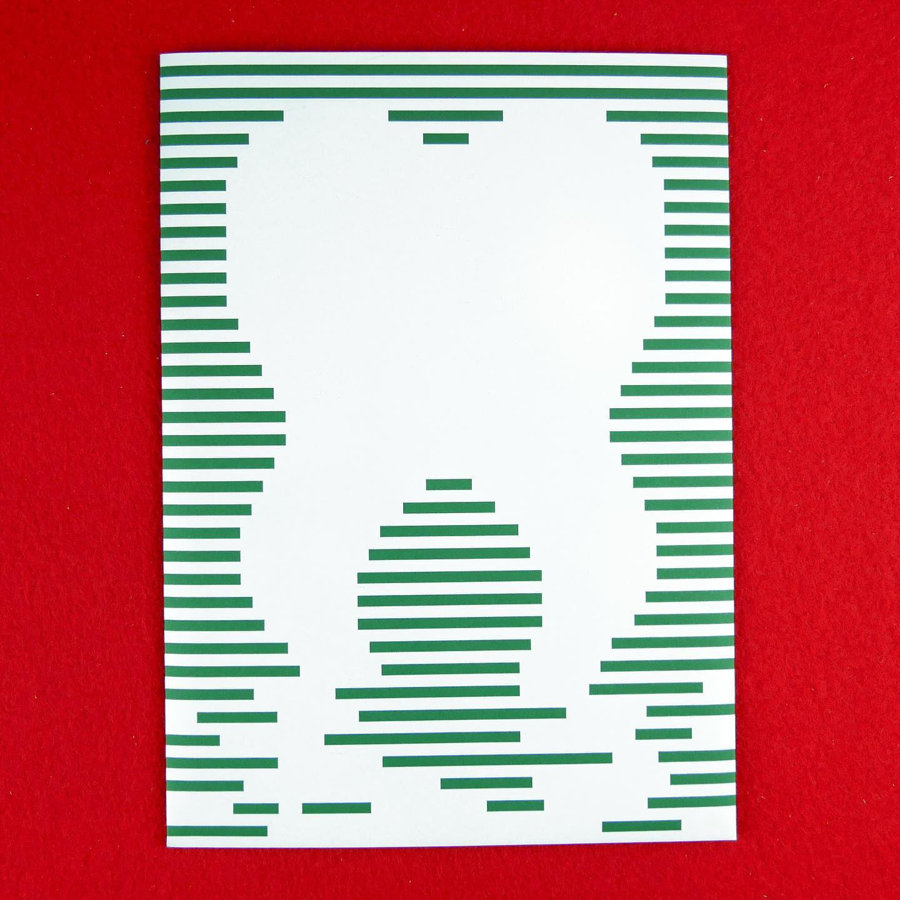
paul dagorne
paul is a typographic-video-musical-product-fiber-hand-letter-logo-artist-designer from saint-brieuc.
a while back, he created this incredible typeface (called footic) inspired by the french reigon of brittany, which is renowned for it's calm shorelines and tiny tidepools– in which paul spent many of his childhood days exploring. i gathered this much in an email exchange with him a few months back...he is incredibly kind, as well as talented and artistically sensitive. (i cold emailed him in his native language, and he responded in mine. grateful for his understand of mes faibles compétences en français.)
i could go on...my garden of inspiration– my reflecting pool, my fountain of artistic youth, my metaphors on metaphors on metaphors– are ever-expanding. these individuals are my beacons of physical-ephemera-inspiration in a sea saturated by digital composistions. (all of which are beautiful, but few of which capture my heart like a nice piece of paper.)